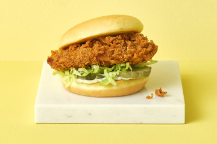
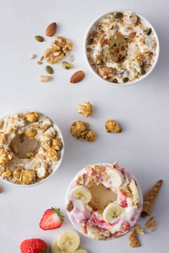
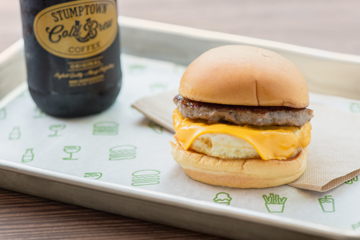

BURGERS 버거
쉐이크쉑의 시그니처 앵거스 비프 패티와 쫄깃한 식감의 토종효모 포테이토 번, 토마토, 양상추에 쉑소스를 올려 만든 심플하면서도 맛있는 쉑버거와 그 외 다양한 버거 메뉴가 있습니다. 채식을 사랑한다면 치즈로 속을 채워 바삭하게 튀겨낸 포토벨로 버섯 패티가 들어간 슈룸 버거도 만나보세요. 쉐이크쉑 코리아는 늘 신선한 맛과 품질 유지를 위해 쉐이크쉑 본사에서 승인한 국내의 우수한 파트너사의 식재료를 사용합니다.
자세히 보기

chicken 치킨
신선한 닭가슴 통살을 버터밀크에 수비드 하여 주문과 동시에 바삭하게 튀겼습니다. 토종 효모 포테이토 번, 아삭한 식감의 양상추와 피클, 쉐이크쉑만의 허브 마요 소스가 토핑된 바삭하고 두툼한 프리미엄 치킨 버거를 즐겨보세요.
자세히 보기

FLAT-TOP DOGS 플랫-탑 도그
쉐이크쉑의 시작을 알리기도 했던 플랫-탑 도그를 버거와 함께 즐겨보세요! 쫄깃한 토종 효모 포테이토 번 위에 참나무 칩으로 훈연한 비프 소시지가 들어간 담백한 핫 도그에 다양한 토핑을 추가해서 맛도 UP! 즐거움도 UP! 시켜보세요
자세히 보기

SIDE 사이드
버거를 먹을 때 사이드 메뉴가 빠져서는 안되죠! 바삭하게 튀겨낸 치킨 바이트를 디핑 소스에 듬뿍 찍어 한 입, 짭짤한 감자튀김을 달콤한 쉐이크에 찍어 한 입. 쉐이크쉑의 사이드 메뉴와 함께라면 그날의 스트레스는 모두 날아갈 거에요!
자세히 보기
CUSTARD 커스터드
매장에서 매일 신선하게 제조하는 쫀득하고 진한 커스터드를 드셔보세요. 입안 가득 퍼지는 부드럽고 달콤한 맛이 당신의 하루를 더욱 완벽하게 만들 것입니다. 클래식 쉐이크 외에도 시즌별로 한정된 기간 동안 맛볼 수 있는 피처드 쉐이크, 각 지역의 특성을 살려 탄생한 매장별 시그니처 콘크리트 등 쉐이크쉑이 전하는 달콤함에 빠져보세요.
자세히 보기

Concretes 콘크리트
쫀득하고 진한 맛의 커스터드와 다양한 믹스-인이 만나 탄생한 쉐이크쉑만의 디저트 메뉴, 콘크리트를 만나보세요. 혹시 알고 계셨나요? 쉐이크쉑의 매장마다 각 지역의 특성을 살려 탄생한 매장별 시그니처 콘크리트가 있다는 사실! 콘크리트와 함께 쉐이크쉑에서의 달콤한 마무리를 즐겨보세요!
자세히 보기

DRINKS 음료
매장에서 직접 만드는 상큼한 레몬에이드, 달지 않고 향긋한 아이스티, 레몬에이드와 아이스티를 반반 섞은 쉐이크쉑의 시그니처 음료 피프티/피프티도 잊지 마세요.
자세히 보기

BEER & WINE 맥주와 와인
쉑버거의 절친이라 할 수 있는 쉑마이스터 에일을 소개합니다. 쉐이크쉑의 버거 맛을 돋우기 위해 핸드앤몰트에서 특별히 양조한 쉑마이스터 에일 한 모금이면 버거의 풍미는 두 배가 될 거예요. 와인을 찾는 게스트들을 위해 프랑스 라파주 와이너리에서 생산한 쉑 와인 (쉑 레드, 쉑 화이트)도 있답니다.
자세히 보기

Breakfast 아침메뉴
( ~ 10:00am) 여행을 떠나기 전, 든든하게 배를 채워보세요. 쉐이크쉑의 특별한 아침 메뉴는 오직 인천공항 T2에서만 즐길 수 있습니다.
자세히 보기
For Dogs 강아지메뉴
우리 마음 속엔 언제나 귀여운 네 발 친구도 함께 합니다. 행복한 반려견을 위한 강아지 테이크 아웃 메뉴도 준비해 두었거든요.
자세히 보기